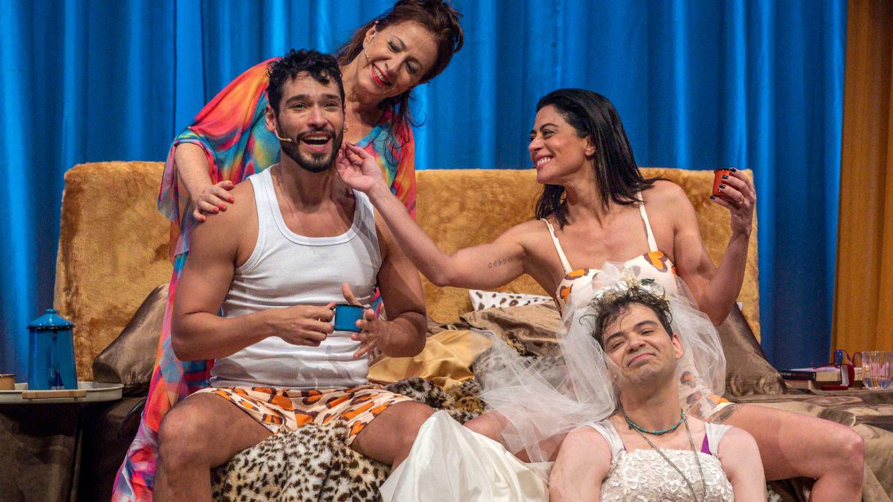

Com Carol Castro, Bruno Fagundes, Gustavo Mendes e Angela Rebello, comédia A Manhã Seguinte está em cartaz em São Paulo

Montagem inédita no Brasil do autor britânico Peter Quilter segue no Teatro VillaLobos até 1º de março de 2026.
E se o amor começasse depois do primeiro “bom dia”? Sucesso em mais de 10 países, A Manhã Seguinte ganhou montagem inédita no Brasil e, após estreia no Rio de Janeiro e sessões lotadas em cidades como Belo Horizonte, Curitiba, João Pessoa e Brasília, está em cartaz em São Paulo desde 9 de janeiro, com temporada no Teatro VillaLobos, no Shopping Villa Lobos, até 1º de março de 2026.
Do dramaturgo inglês Peter Quilter, a peça é apresentada como uma comédia leve, inteligente e cheia de reviravoltas sobre encontros inesperados, famílias nada convencionais e o desafio de lidar com sentimentos quando ninguém diz exatamente o que está sentindo. O elenco reúne Carol Castro, Bruno Fagundes, Gustavo Mendes e Angela Rebello, com direção de Thereza Falcão e Bel Kutner.
Uma manhã, quatro personagens e muitas incertezas
A história traz um quarteto: um rapaz tímido, uma jovem decidida, uma mãe sem filtro e um irmão de humor afiado e zero limites — combinação que transforma qualquer manhã em um “verdadeiro espetáculo”, como define o material de divulgação.
Na trama, Kátia (Carol Castro) e Tomás (Bruno Fagundes) se conhecem por acaso e, na manhã seguinte, acordam no mesmo quarto, cercados de incertezas. O embaraço aumenta com a chegada inesperada da mãe de Kátia (Angela Rebello), que opina sem medir palavras, e com a entrada de Márcio (Gustavo Mendes), o irmão especialista em bagunçar ainda mais o que já estava fora do controle. A peça se apresenta como uma história sobre afetos, tropeços e a beleza do improviso — “porque, às vezes, a vida só começa mesmo… na manhã seguinte”.
Para Thereza Falcão, dirigir a comédia é explorar “com delicadeza e humor o desconforto do inesperado”, e ela destaca que a peça fala sobre encontros reais e, sobretudo, sobre “o que não se diz”. Já Bel Kutner define o espetáculo como um teatro de afeto, leveza e verdade, que faz o público rir da própria vulnerabilidade.
Apresentação e patrocínio via Lei Rouanet
O espetáculo é apresentado pelo Ministério da Cultura e CAIXA Residencial, por meio da Lei Federal de Incentivo à Cultura (Lei Rouanet). O CEO da CAIXA Residencial, Rodrigo Valença, afirma no release a importância de projetos com itinerância para fortalecer o acesso à cultura, e comenta que a empresa vê sentido em apoiar uma obra ambientada em um contexto íntimo e familiar, onde vínculos se revelam com humor, emoção e surpresa.
Desconto para clientes e colaboradores CAIXA Residencial
O material informa 50% de desconto para compra de até dois ingressos em qualquer setor (não cumulativo). Para ativar, deve-se selecionar a data e a opção “Caixa Residencial” e inserir o código enviado por e-mail, ou contatar a Central pelo 0800 722 492 6.
Serviço
A Manhã Seguinte (em cartaz)
Temporada: 9 de janeiro a 1º de março de 2026
Sessões: sextas e sábados, às 20h; domingos, às 18h
Local: Teatro VillaLobos — Shopping Villa LobosAv. Dra. Ruth Cardoso, 4777 — Jardim Universidade Pinheiros, São Paulo (SP)
Classificação: 12 anos
Duração: 80 minutos
Gênero: comédia
Ingressos: de R$ 21 a R$ 150